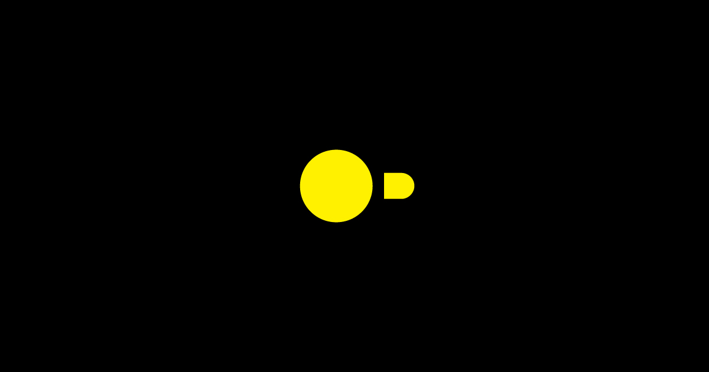
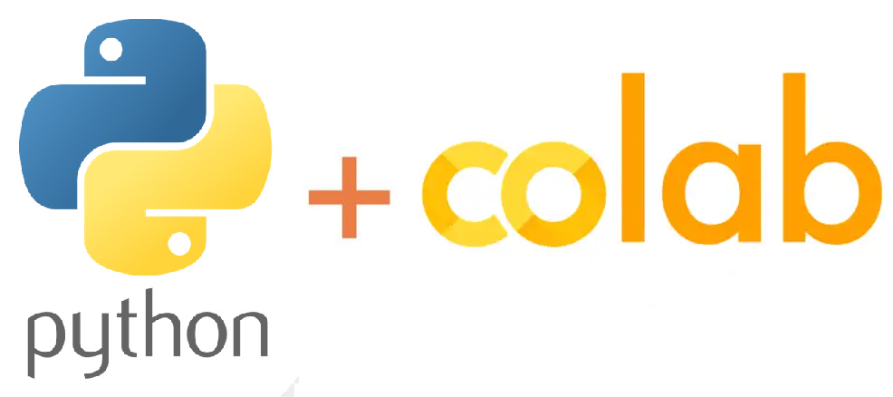
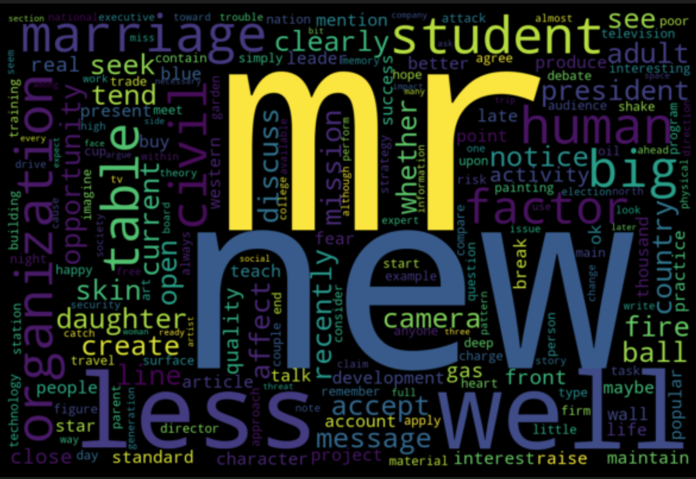
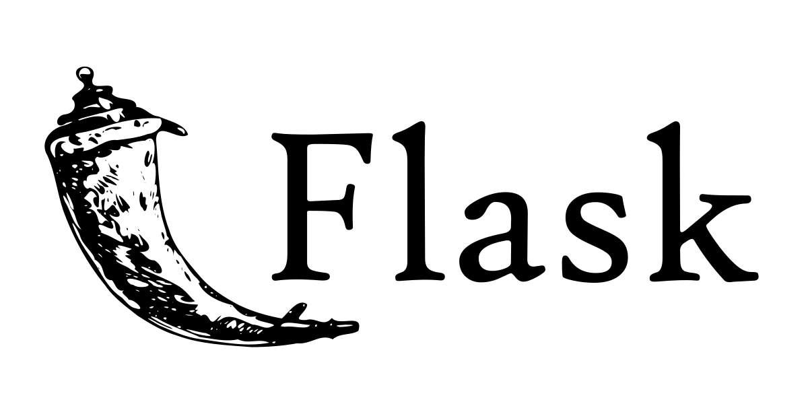
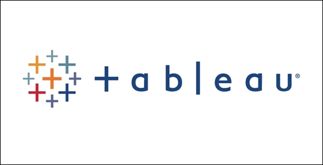
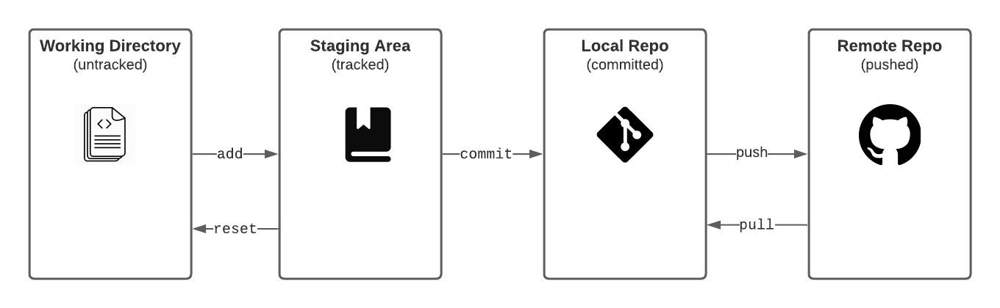
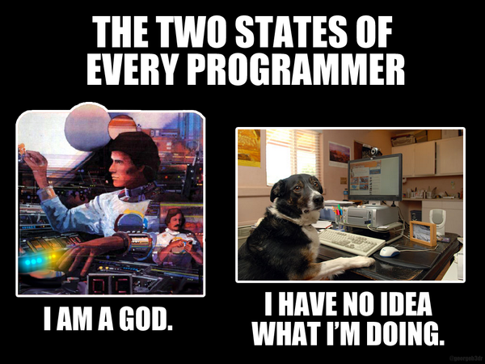

dchess.org
About
Resume
Categories
All
(18)
blog
(8)
project
(1)
projects
(3)
tutorial
(6)
QuackSQL
project
DuckDB has quietly become my go-to tool for analytical work in Python. It runs locally, reads Parquet files directly, and handles large analytical queries efficiently. For…
Mar 8, 2026
Dan Hess

SQL Basics using DuckDB
tutorial
I’ve been wanting to put together a simple resource for learning the basics of querying data with SQL for some time now. However, one of the roadblocks has been the overhead…
Aug 20, 2023
Configuring Pandas with Yaml Files
tutorial
Reading data from files into pandas dataframes is largely straight-forward and easy to do. Choose the right input function depending on the file type, pass in the filepath…
Aug 19, 2023
Treating Diagrams Like Code
blog
There is a common saying in software development that “code should speak for itself” and while I agree with the ideas behind that statement and the need for code that is…
Jun 19, 2023
Goodbye Pelican, Hello Quarto
blog
Seven years ago, I first published a Jekyll blog hosted in Github pages and let it lie largely dormant for two years. Then, as a New Year’s resolution, I rebuilt the entire…
Feb 20, 2023

I Can Python, So Can You
tutorial
Before I left Aspire, I had started an internal training on Python for those in the org who were interested in learning to do a bit of coding. Inspired by the tag line from…
Feb 11, 2023
Parsing Texas Assessment Data
tutorial
Data files available here on the TEA website.
Jan 29, 2022

Creating WordClouds
tutorial
Text analysis is hard, but one simple visual tool for extracting insights from dense text are word clouds. Word clouds help identify patterns in the preponderance of certain…
Feb 4, 2021

Auto-generated REST API for MS SQL database
blog
Suppose you have a database with tables and views that you want to expose as JSON through a REST API but you don’t want to couple the database tables with object models in…
Jan 16, 2021

Virtual K-12 Tableau User Group - 14 January 2021
projects
In the wake of COVID19, we needed to provide our schools with a way to identify students who would most benefit from additional supports to access distance learning.
Jan 14, 2021

How I Teach Git
blog
When I first learned to use Git, it supercharged my development and I was quickly sold on its value, but I had no real understanding of how it worked. I just memorized…
Jan 13, 2021
Normalize JSON with Pandas
tutorial
When processing nested
JSON
data into a flat structure for importing into a relational database, it can be tricky to structure the data into the right shape. Pandas has a…
Jan 12, 2021
InnovateEDU Webinar - 19 November 2020
projects
In the wake of COVID19, we needed to provide our schools with visibility into student engagement with distance learning. The majority of our schools were using Google…
Nov 19, 2020
My Manager README
blog
When I transitioned from being primarily a software engineer who was an individual contributor on a team to managing a team of engineers, I didn’t have a clear sense of who…
Aug 8, 2018
Automating Developer Environment Setup
blog
I develop on Linux. Ubuntu to be specific. Most of the web apps I build I end up deploying to Heroku. Since their stack is based on Ubuntu and Postgres, I try to make my…
Feb 18, 2018
Resolutions for the New Year
blog
Well, it’s 2018 and it’s been two years since I last made an update to my blog. I originally published it to test out Jekyll and to put something basic on my personal…
Jan 21, 2018

How Memes Inform My Work
blog
I remember fondly how excited I was the first time I understood an obscure coding joke on r/programmerhumor. It felt like finally being in “the club” and not feeling like…
Jan 21, 2018
Student Email Sync
projects
To pull automatically generated student email addresses from our MS SQL data warehouse and push into production PowerSchool instances in multiple states.
May 31, 2016
No matching items